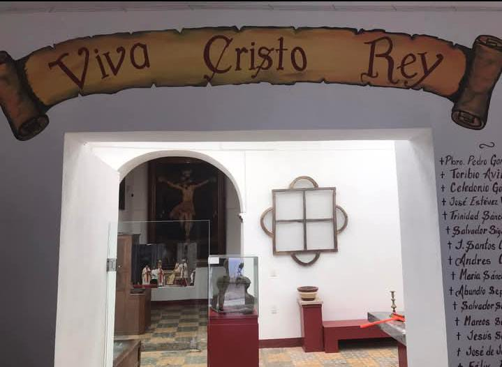
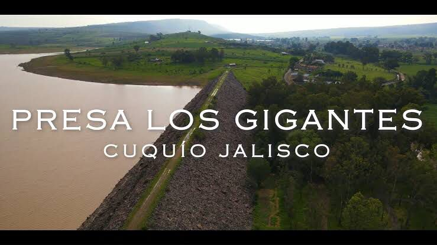
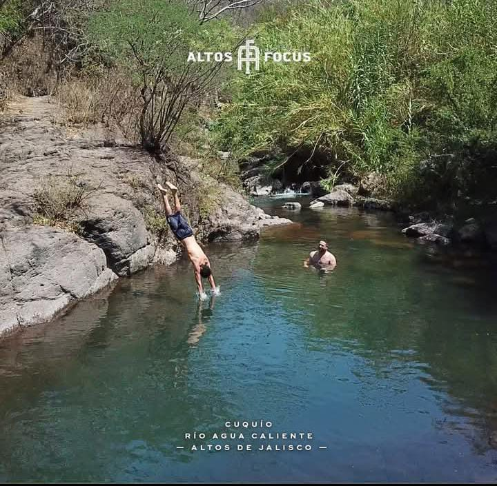

Museo Parroquial
Museo parroquial de los Santos mártires, en dónde se muestran parte de la historia de nuestro pueblos en los tiempos de la cristiada. Los esperamos sábados y domingos de 11am a 7pm. Estamos ubicados por la calle Morelos a dos puertas Maya lencería casi llegando a la placita de los mártires
Ubicación: Centro de Cuquío, Jalisco
Presa los Gigantes
Un espacio ideal para días de campo, pesca y paseos en lancha. Ofrece vistas panorámicas y es un lugar popular para actividades al aire libre.
Ubicación: Camino a las cruces,Cuquío
El Agua caliente
es un sitio natural muy visitado por la gente del pueblo y visitantes cercanos. Generalmente se le llama así porque el agua que brota de ahí tiene una temperatura templada o cálida, y muchas personas van para relajarse, nadar o pasar un rato en familia o con amigos. Está rodeado de naturaleza, lo que lo hace un lugar bonito y tranquilo
Ubicación: Camino a Cuquío
